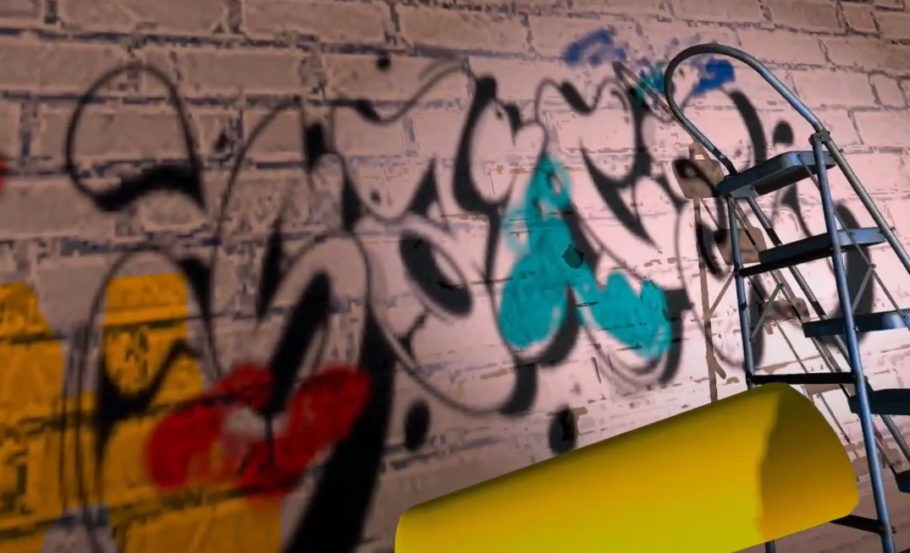

About Me
Welcome to my webpage! My name is Qiaohui Liang, and I am currently studying Computer Graphics, Vision and Imaging at University College London. My passion lies in the field of computer vision and computer graphics.
On this page, you will find information about my background, professional experience, as well as demos of my projects. Thank you for taking the time to visit my page, and I hope you enjoy learning more about me and my work!
Education
University College London 2022-2023
MSc in Computer Graphics, Vision and Imaging- Modules: Machine Vision, Computer Graphics, Image Processing, Machine Learning in Vision Computing, Perception and Interface, 3D Geometry, Machine Learning in Medical Imaging, Virtual Environment
The Chinese University of Hong Kong, Shenzhen 2018-2022
BSc in Electronic Information Engineering- The First Honor, GPA 3.72/4.0
- Ranked top 1% in major
- Dean's List, all semesters (4 years)
- Recipient of Undergraduate Research Awards for research excellence, 2021-2022
My projects
During my Master's degree in Computer Vision at UCL, I had the opportunity to work on several exciting projects that pushed the boundaries of what's possible with machine vision. I'm excited to share some of the highlights of this work with you on my personal website. The videos on this page showcase some of the most interesting projects I worked on during my degree program, and demonstrate my skills in VR, 3d Vision and digital image processing. I hope you find these videos as fascinating and inspiring as I do, and I welcome any questions or feedback you may have.
Social VR (Unity) - SprayX
SprayX is a fun and addictive game that lets players experience the excitement of graffiti art, developed with Unity. With single and two-player modes, users can spray or brush virtual walls with various colors, mix pigments with friends, and climb the ladder to show off their skills. Developed using Unity in just one month, SprayX offers an easy-to-use interface and intuitive controls that make it easy for anyone to jump in and start creating. Get ready to unleash your inner artist in SprayX!Surface registration - ICP
In this project, I used the ICP point-to-plane algorithm to successfully piece together fragmented bunny models. This involved processing lots of point cloud data and using advanced algorithms to align the different parts of the model. Through this project, I gained hands-on experience with 3D modeling software Meshlab and enhanced my understanding of ICP algorithm and data processing techniques.Face morphing
The objective of this project is to create a natural-looking transformation of one person's face into another person's face. I first used a facial landmark detector and manually added points for better quality. Then triangulations are created using an automatic algorithm and interpolated intermediate image coordinates. Finally, using affine warp and triangulation, I created a fascinating visual effect.3D reconstruction - Kinect Fusion
This project involves implementing the KinectFusion algorithm for 3D reconstruction, which allows for reconstruction of 3D environments using depth images. In addition to the standard KinectFusion pipeline, I also introduced an innovative new feature alignment technique in the pose estimation stage. This new approach improved the accuracy and robustness of the overall system.
SketchFuse: A user-guided inpainting method (Master Thesis)
Inpainting is the art of restoring and filling in missing or damaged parts of images. However, many current inpainting methods do not allow additional user input except masks, causing a loss of generation control, while those using text prompts risk ambiguity and the omission of key visual details. To address these problems, I developed "SketchFuse," a inpainting tool that allows users to guide the inpainting process using their sketches, making the restoration personalized and user-centric. This method not only enables more accurate and individualized reconstructions but also extends its capabilities by transforming these images into 3D point clouds, broadening its applications to augmented and virtual reality. More details and results can be found: SketchFuse

Working on... VFX Game
Currently I am learning VFX, trying to put what I learned to a shooting game.
Still working on it and updating.
- Magic Orb
- FlameThrower
- Lightning
- Fire
Work Experience
XVERSE Co. 2022.6 - 2022.8
Imaging Algorithm Intern, Encoding and Decoding Transmission Dept- Implemented a 3D cube-to-sphere projection algorithm by C++ from scratch for metaverse scenarios.
- Applied Geogebra to visually create the 3D representation and derived complex mathematical formulas to establish pixel relationship between cube and sphere in 3D world.
- Derived complex mathematical formulas based on the 3D image to establish the relationship between each pixel on the cube and sphere, taking into account variables such as yaw, pitch, fov, width, and height.
- Programmed the cube-to-sphere projection in C++ and optimized its performance from 0.8 seconds per frame to 0.1 seconds per frame.
Tencent Music Entertainment Co., Ltd. 2022.2 - 2022.5
Imaging Algorithm Intern, Tianqin Laboratory- Contributed to the super-resolution reconstruction of panorama scenes in music videos, resulting in improved video quality.
- Participated in the NTIRE 2022: Stereo Image Super-Resolution Challenge and achieved a top 12 ranking.
- Conducted super-resolution reconstruction of images taken from dual-lens smartphone cameras, using combinations of PASSRnet, iPASSRnet, SwinIR, and the iPASSRnet-SwinIR.
TCL New Technology Co., Ltd 2021.6 - 2021.8
Imaging Algorithm Intern, AI Research Centre- Collaborated with senior engineer to sample camera images and integrate traditional image processing techniques such as Wiener filtering with deep learning to denoise images and used PyTorch to train models for achieving super-resolution reconstruction of the dataset.
- Closed the gap between characteristics required to develop the SISR model and those present in public datasets by utilizing kernalGAN and DSGAN to produce project-specific datasets and supported the innovative restructuring of the SISR algorithm model.
- Conducted independent comparative experiments on the super-resolution effects of FSRCNN, RFDN, SESR, and RRDB. Used kernalGAN, RealSR to delineate data routes, achieving a better super-resolution effect than the original FSRCNN model through optimized detail restoration and noise elimination. Earned high praise from the team.
What I'm good at?
Python(Pytorch, OpenCV); C++
I am proficient in Python, having used it extensively throughout my coursework and projects. Besides, I am experienced in utilizing Pytorch for deep learning applications, openCV for processing images and numpy for matrices calculation. I am also knowledgeable in C++.
3D math & Linear Algebra
I possess a quite strong understanding of 3D math and Linear Algebra, which enables me to develop algorithms for computer vision and manipulate 3D objects. Moreover, my strong spatial imagination enabled me to swiftly solve problems during my previous internship.
Effective team collaborator
As an effective team collaborator, I have a friendly and approachable personality, which enables me to easily connect and establish strong working relationships with my colleagues. I believe that strong working relationships are vital for creating a productive and harmonious team dynamic.
Vision technology enthusiast
I am passionate about images. As a photographer, I have a keen eye for detail and an appreciation for the power of visual media. I first started exploring machine vision four years ago during a project on removing mosaic, which sparked my curiosity in this field.
My hobby - Photography